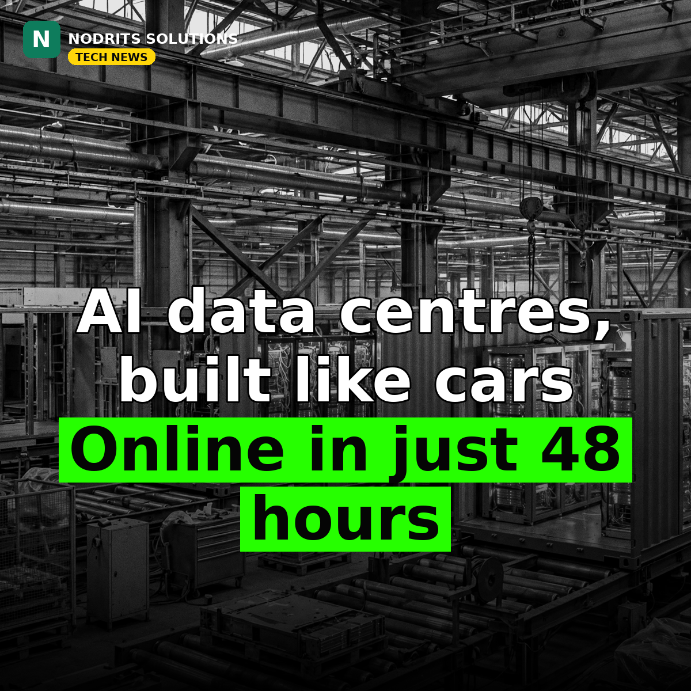

AI Data Centres, Built Like Cars: Runware's 48-Hour Pod Plan

AI data centres, built like cars — and online in just 48 hours. That is the pitch Runware outlined to TechCrunch on October 30, 2026: factory-assembled modular data centres, shipped ready to install, with production scaled like an automotive line at its factories in Romania.
What happened
Runware's product is the Sonic Inference Pod, a container-sized modular data centre designed for AI inference — the computing that runs trained models. Each pod packages about one megawatt of computing capacity into a 20-foot container, with a closed-loop liquid cooling system that releases heat through air-cooled radiators, so no water connection is needed; a site needs ground, power and network access. The company already operates one factory it has used for several years and started building a second earlier this year, expected to finish within months and go online early in 2027, with production ramping gradually from 2027. Co-founder and CEO Flaviu Radulescu told TechCrunch the company plans to scale production to 30 megawatts of data-centre capacity per day by 2028 — nearly one gigawatt per month. The 48-hour figure needs its asterisk: it covers installation and setup at a prepared site, not manufacturing. A pod takes about three weeks to build today; the company says that will fall to one day as production ramps. Radulescu also said Runware has received $1 billion in committed interest for its pods since offering them to outside customers a month ago, representing over 20 megawatts it is working to deliver — committed interest, not completed sales. Its site pipeline spans 397 megawatts, with potential to expand to 1.2 gigawatts. The factory work is funded by a $50 million Series A announced in December 2025; the company has raised more than $60 million in total and plans a Series B.
Why it matters
The idea is industrial, not magical: data-centre demand is outrunning traditional construction, and prefabrication is the obvious answer — Crusoe and Schneider Electric sell prefabricated pods too, so Runware's claim is speed, not novelty. That is also where the skepticism belongs. Thirty megawatts a day is a 2028 target, not demonstrated capacity; the $1 billion is interest, not revenue; and factory output means nothing without powered, permitted sites, which remain the industry's real bottleneck. Nvidia's own Vera Rubin AI factories and DSX POD, announced earlier this year, show the same direction of travel from the biggest player in the stack. The durable question is not whether pods work — they do — but whether any vendor can deliver them, powered and on time, at the pace the AI buildout demands.
What it means for you
If you are buying AI capacity, get three dates in writing, not one: the manufacturing date, the installation date, and the powered-site date. Do not plan capacity around a vendor's target year, and confirm power, cooling and network requirements for your specific site before signing. Wait for delivery evidence at scale — a pod delivered is a fact; a pod promised is a forecast.
The Nodrits take
Factory-built compute is a sound industrial idea. The question is delivery — at scale, on time, with power attached. Would you bet your AI capacity on a factory-built data centre, or stick with traditional builds? Tell us in the comments on today's post.
Need a website, SaaS product or AI workflow built right?
Nodrits Solutions designs, develops and automates for businesses in Pakistan, the USA, UK, UAE and Saudi Arabia.
Talk to Nodrits →Sources: TechCrunch (October 30, 2026) and corroborating coverage. Production targets, timelines and committed-interest figures are the company's; 48 hours covers installation and setup only.. Published October 31, 2026.